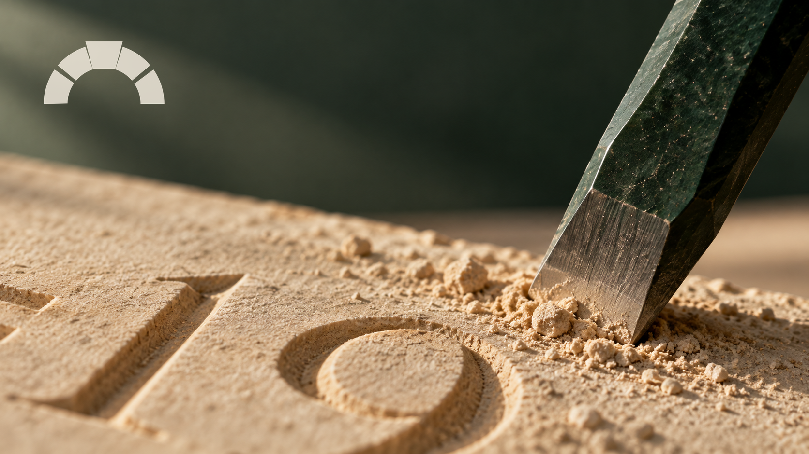

Begin met je eigen situatie.
Geen generieke aannames als het niet hoeft. Je vult bedragen, looptijd of scenario’s in die voor jouw keuze relevant zijn.
Rekenen
Rumaz bouwt rekentools die zakelijke beslissingen terugbrengen tot iets concreets. Je vult je cijfers in, vergelijkt scenario’s en ziet direct wat een keuze werkelijk kost of oplevert — niet alleen vandaag, maar over de hele looptijd.
Geen spreadsheetfetisj, wel logica uit de praktijk. Deze pagina groeit vanuit eigen ervaring: een zakelijke rekening opzetten, een domein en e-mail lean regelen, vaste lasten uitpluizen en steeds weer kijken waar geld weglekt of juist slimmer kan worden ingezet.
Werkelijke kosten · Eigen ervaring · Direct toepasbaar

Rekentools
Vijf routes voor veelvoorkomende zakelijke keuzes. De jaarkosten-tool kun je nu direct gebruiken; de andere rekentools volgen stap voor stap.
Alles draait om dezelfde gedachte: niet rekenen om het rekenen, maar een keuze kleiner maken. Zodat je sneller ziet wat logisch is, waar je kunt versimpelen en welke optie onderaan de streep écht slimmer is.
Vergelijk aanschaf, abonnement, looptijd en totale kosten. Bijvoorbeeld voor telefoon, internet, auto of andere zakelijke uitgaven.
Zodat je niet alleen kijkt naar de maandprijs, maar naar het hele plaatje.
Breng bank, domein, e-mail, boekhouding, telecom, software en andere vaste lasten samen. Per maand én per jaar.
Van losse bedragen naar één totaal, zodat de basis van je onderneming helder wordt.
Kies wat je echt nodig hebt en zie wat een professionele maar lean zakelijke basis kost — zonder pakketten omdat “dat nu eenmaal hoort”.
Handig voor starters, maar ook voor bestaande ondernemers die hun basis willen opschonen.
Reken door wat een totaalpakket je kost tegenover een slimme combinatie van losse tools voor bijvoorbeeld domein, e-mail, site, planning of administratie.
Voor situaties waarin gemak prettig klinkt, maar flexibiliteit of lagere kosten juist slimmer kunnen zijn.
Zet tijd, uurtarief, snelheid, kwaliteit en foutmarge naast elkaar. Ideaal voor keuzes rond uitvoering, inrichting, projectwerk of specialistische klussen.
Niet alles wat je zelf kúnt, is ook slim om zelf te blijven doen.
Uit de praktijk
Deze tools ontstaan niet vanuit een theoretische spreadsheet, maar uit concrete beslissingen die ook in mijn eigen werk en ondernemerschap steeds terugkomen. Wat is écht nodig? Welke keuze blijft lean? En waar zit de schijnbare besparing die later juist duurder uitpakt?
Hetzelfde denken gebruik ik ook in werk voor anderen: bij de ontwikkeling van een winkel, een team dat vastloopt en projecten weer lean moet maken, of het meedenken over een horeca-inrichting waar budget, keuzes en volgorde slim op elkaar moeten aansluiten.
Wat volgt
De rekentools Pakket of losse tools? en Zelf doen of uitbesteden? zijn de logische volgende stap. Ze bouwen voort op vragen die in de praktijk steeds terugkomen: waar betaal je voor gemak, waar betaal je dubbel en wanneer is het slimmer om iets klein, modulair of juist uitbesteed te organiseren?
Ook deze tools krijgen een eigen rekenlogica, voorbeelden en een duidelijke uitkomst. Tot die tijd blijft de focus op één tool die wél direct iets oplevert: je jaarkosten helder krijgen.
Binnenkort kun je hier totaalpakketten naast losse tools leggen en zien wanneer gemak de meerprijs waard is.
Binnenkort kun je hier tijd, kwaliteit en externe kosten naast elkaar zetten om een nuchtere maak-of-koopkeuze te maken.
Werkwijze
Van invoer naar inzicht naar actie. Kort, helder en zonder extra lagen die niets toevoegen.
Geen generieke aannames als het niet hoeft. Je vult bedragen, looptijd of scenario’s in die voor jouw keuze relevant zijn.
De tools brengen eenmalige kosten, maandlasten, looptijd en praktische verschillen samen tot één leesbare uitkomst.
Je hoeft niet alles perfect te weten. Als de som helder is, wordt de keuze meestal meteen rustiger en concreter.
Rekenen is hier geen doel op zich. Het is een manier om gedoe kleiner te maken, geld slimmer in te zetten en sneller door te kunnen.
Vraag een rekenslag aan